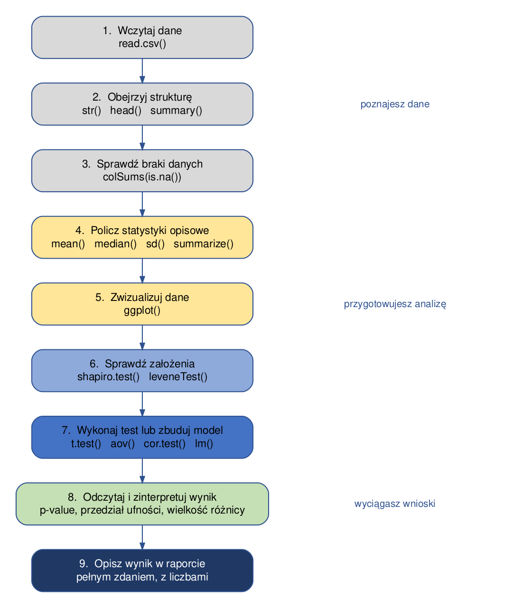

2 Wprowadzenie do pracy w R
Ten rozdział opisuje, jak zorganizować pracę na ćwiczeniach: gdzie trzymać pliki, jak wczytywać dane i jak zapisywać wyniki. Nawyki wyrobione w tym miejscu oszczędzają później bardzo dużo czasu - większość problemów, na jakie natykają się studenci w trakcie semestru, to problemy ze ścieżkami do plików, a nie ze statystyką.
2.1 Przebieg ćwiczenia
Niemal każde ćwiczenie ma ten sam przebieg. Warto mieć go przed oczami: porządkuje pracę i pomaga zorientować się, na jakim etapie analizy jesteśmy.

Kolejne rozdziały skryptu rozwijają poszczególne kroki tego schematu: kroki 1-3 omawia rozdział Przetwarzanie danych w R, krok 4 - Statystyki opisowe, krok 5 - rozdziały o wizualizacji, a kroki 6-8 - rozdziały o testach statystycznych.
2.2 Projekt RStudio
Pracę nad ćwiczeniami najwygodniej prowadzić w projekcie RStudio. Projekt to zwykły folder z dodatkowym plikiem o rozszerzeniu .Rproj, który mówi RStudio: to jest katalog roboczy tej pracy.
Dlaczego warto. Po otwarciu projektu katalog roboczy ustawia się automatycznie na folder projektu. Dzięki temu w kodzie można używać ścieżek względnych (dane/pomiary_pol.csv) zamiast bezwzględnych (C:/Users/Anna/Documents/studia/.../pomiary_pol.csv). Kod zadziała wtedy także na innym komputerze - na przykład na komputerze w sali ćwiczeniowej albo u osoby, z którą robisz projekt zespołowy.
Jak założyć projekt: File → New Project → New Directory → New Project, a następnie podaj nazwę folderu i miejsce na dysku.
Proponowana struktura folderów:
cwiczenia_statystyka/
├── cwiczenia_statystyka.Rproj <- plik projektu; otwieraj pracę przez niego
├── dane/ <- pliki z danymi (csv, txt, rds)
├── out/ <- wyniki: wykresy, tabele, zapisane obiekty
└── analiza.qmd <- dokument z kodem i opisemPrzy takiej strukturze wczytanie danych wygląda zawsze tak samo:
pomiary <- read.csv("dane/pomiary_pol.csv")2.3 Dokument Quarto
Na ćwiczeniach pracujemy w dokumentach Quarto, a nie w zwykłych skryptach .R. Dokument Quarto łączy w jednym pliku trzy rzeczy: tekst (opis tego, co robisz i jakie wnioski wyciągasz), kod oraz wyniki - tabele i wykresy. Dzięki temu rozwiązane zadanie jest od razu gotowym sprawozdaniem, a nie zbiorem poleceń, do których trzeba dopisywać komentarz z pamięci.
2.3.1 Jak utworzyć dokument
File → New File → Quarto Document, a następnie podaj tytuł i autora. Plik zapisz w folderze projektu z rozszerzeniem .qmd.
2.3.2 Z czego składa się dokument
Dokument ma trzy rodzaje zawartości:
1. Nagłówek YAML - na samej górze, między liniami ---. Określa tytuł, autora i format wynikowy:
---
title: "Statystyki opisowe - ćwiczenie 3"
author: "Jan Kowalski"
format: html
---2. Tekst - zwykły tekst z prostym formatowaniem:
## To jest nagłówek
Tekst zwykły, **pogrubiony**, *kursywa*, `nazwa funkcji`.
- element listy
- kolejny element3. Bloki kodu - fragmenty R, które Quarto wykona przy generowaniu dokumentu. Blok zaczyna się i kończy trzema znakami akcentu, a na początku podajemy język w nawiasie klamrowym:
```{r}
pomiary <- read.csv("dane/pomiary_pol.csv")
mean(pomiary$annual_tavg, na.rm = TRUE)
```Nowy blok kodu wstawisz skrótem Ctrl+Alt+I (macOS: Cmd+Option+I) albo przyciskiem +C nad edytorem.
2.3.3 Jak uruchamiać kod
W trakcie pracy nie trzeba generować całego dokumentu po każdej zmianie:
| Czynność | Skrót |
|---|---|
| uruchom bieżącą linię | Ctrl+Enter |
| uruchom cały blok kodu | Ctrl+Shift+Enter (albo zielona strzałka przy bloku) |
| uruchom wszystkie bloki powyżej | przycisk ze strzałką w dół przy bloku |
Wynik pojawia się pod blokiem - w dokumencie, a nie w osobnym oknie.
2.3.4 Jak wygenerować dokument
Przycisk Render nad edytorem (albo Ctrl+Shift+K) tworzy plik HTML z całym dokumentem: tekstem, kodem i wynikami. To ten plik oddajesz jako rozwiązanie zadania.
Ważne. Przy generowaniu Quarto uruchamia dokument od początku, w czystej sesji R. Jeśli kod działa w konsoli, ale dokument nie chce się wygenerować, przyczyną prawie zawsze jest to, że korzystasz z obiektu utworzonego wcześniej „ręcznie” w konsoli, a nie w jednym z bloków. Dobry nawyk: od czasu do czasu wyczyść środowisko (miotełka w panelu Environment) i uruchom dokument od nowa.
2.3.5 Przydatne opcje bloków
Opcje zapisujemy wewnątrz bloku, w linii zaczynającej się od #|:
```{r}
#| echo: false # pokaż wynik, ale ukryj kod
#| eval: false # pokaż kod, ale go nie wykonuj
#| message: false # ukryj komunikaty (np. przy wczytywaniu pakietu)
#| warning: false # ukryj ostrzeżenia
```Opcja message: false przydaje się przy library(dplyr), które wypisuje kilka linii informacji niepotrzebnych w sprawozdaniu.
2.4 Katalog roboczy
Katalog roboczy to folder, względem którego R szuka plików. Sprawdzamy go funkcją getwd():
getwd()Katalog można zmienić funkcją setwd(), ale w pracy z projektem nie jest to potrzebne:
setwd("C:/Users/Anna/Documents/cwiczenia_statystyka")Uwaga.
setwd()z pełną ścieżką to najczęstsza przyczyna kodu, który „działa tylko u mnie”. Ścieżka zawiera nazwę użytkownika i układ folderów konkretnego komputera, więc u kogokolwiek innego kod się zatrzyma. Jeśli pracujesz w projekcie,setwd()nie jest potrzebne w ogóle.
2.5 Otwieranie plików z danymi
#Otwieranie danych z pliku csv
dane <- read.csv('dane/dane.csv')
#otwieranie danych z pliku txt - wymaga określenia separatora
dane2 <- read.table('dane/dane.txt', sep = " ")Dane w pliku dostępnym tylko w R
australia <- readRDS("dane/dane.rds")Otwieranie środowiska pracy (przydatne, gdy chcemy wczytać kilka obiektów do R)
load("dane/cw1.rda")Po wczytaniu danych zawsze warto sprawdzić, czy wczytały się poprawnie - czy liczba kolumn i wierszy się zgadza i czy zmienne mają właściwy typ:
str(dane) # struktura: typy zmiennych i liczba obserwacji
head(dane) # kilka pierwszych wierszy
summary(dane) # podstawowe statystyki i liczba braków danychJeśli liczby się nie zgadzają (np. cała tabela wczytała się jako jedna kolumna), najczęstszą przyczyną jest zły separator kolumn albo separator dziesiętny - zob. argumenty sep oraz dec w pomocy funkcji read.csv().
2.6 Dane zawarte w pakietach
data("gapminder", package = "gapminder")2.7 Zapisywanie wyników pracy
2.7.1 Zapisywanie pojedynczego obiektu (np. ramki danych)
Plik tekstowy może być otworzony w dowolnym oprogramowaniu
write.csv(australia, "out/australia.csv")2.7.2 Zapisywanie wyników pracy w formacie dostępnym tylko w R
Pojedynczy obiekt
saveRDS(dane, "out/dane.rds")Zapisywanie wybranych obiektów ze środowiska pracy R
save(dane, australia, file = "out/cw1a.rda")Zapisywanie wszystkich obiektów znajdujących się w środowisku pracy R
save.image("out/cw1b.RData")Uwaga. Zapisywanie całego środowiska pracy (
save.image()) bywa wygodne, ale utrudnia powtórzenie analizy: po ponownym otwarciu nie wiadomo, skąd wzięły się obiekty. Lepszym nawykiem jest zapisanie kodu, który te obiekty tworzy - wtedy wynik zawsze da się odtworzyć od zera.
2.8 Pomoc
?nazwaFunkcji
help(nazwaFunkcji)
example(nazwaFunkcji)
args(nazwaFunkcji)Na stronie pomocy najbardziej przydatne są dwie sekcje: Usage (jakie argumenty przyjmuje funkcja i jakie mają wartości domyślne) oraz Examples na samym dole (gotowe wywołania, które można uruchomić).
2.9 Zadania
Sprawdź, jaki jest aktualny katalog roboczy, a następnie wyświetl nazwy plików, które się w nim znajdują (funkcja
list.files()).
Rozwiązanie:
getwd()
list.files()W edytorze w przeglądarce katalogiem roboczym jest katalog wirtualny, w którym udostępniono pliki z danymi. We własnym projekcie zobaczysz folder projektu.
Wczytaj zbiór danych
gapminderz pakietu o tej samej nazwie, a następnie sprawdź: ile ma wierszy i kolumn, jakiego typu są poszczególne zmienne i czy zawiera braki danych.
Rozwiązanie:
data("gapminder", package = "gapminder")
str(gapminder) # typy zmiennych, liczba obserwacji
nrow(gapminder) # liczba wierszy
ncol(gapminder) # liczba kolumn
summary(gapminder) # statystyki; braki danych pokazałyby się jako NA'sZbiór ma 1704 wiersze i 6 kolumn. country i continent są zmiennymi czynnikowymi (factor), pozostałe - liczbowymi. Braków danych nie ma.
Korzystając ze strony pomocy funkcji
read.csv()sprawdź, jak wczytać plik, w którym kolumny rozdzielone są średnikiem, a część dziesiętną oddziela przecinek (tak zapisuje pliki csv polska wersja Excela).
Rozwiązanie:
?read.csv
# wczytanie pliku z separatorem ";" i przecinkiem dziesiętnym:
dane <- read.csv("dane/plik.csv", sep = ";", dec = ",")
# to samo robi gotowy wariant funkcji:
dane <- read.csv2("dane/plik.csv")Jeśli po wczytaniu liczby trafiły do R jako tekst (chr zamiast num w wyniku str()), prawie zawsze przyczyną jest właśnie separator dziesiętny.